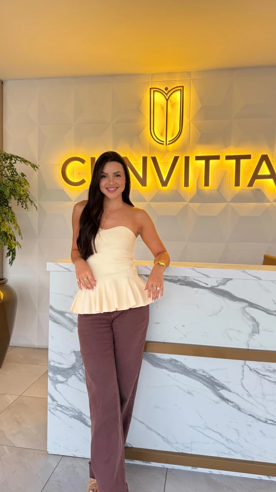
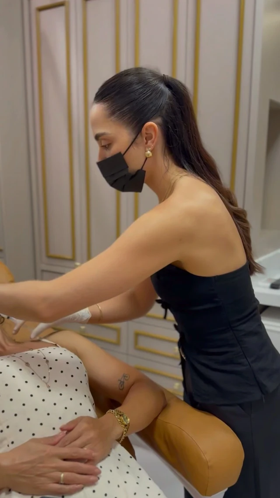
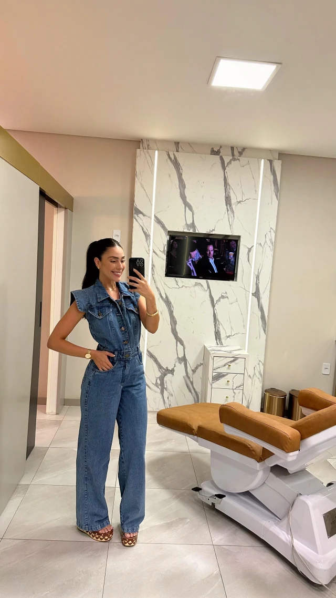
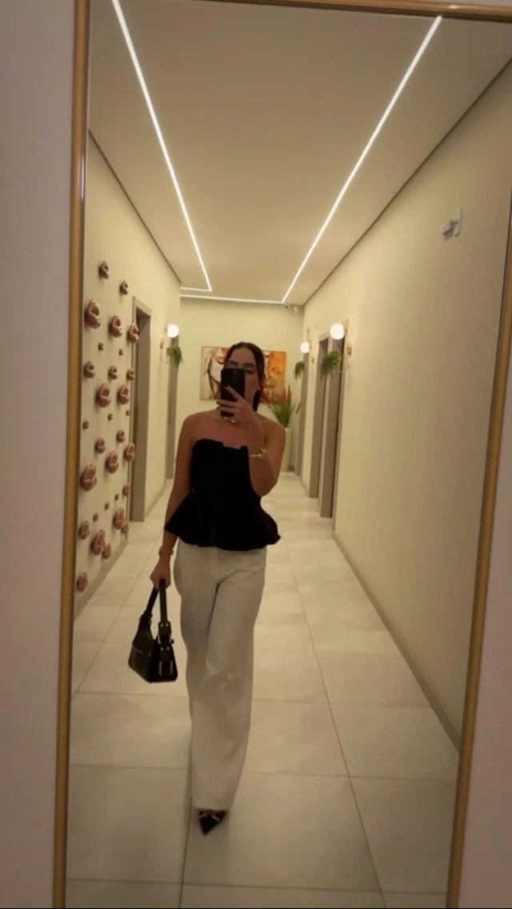

Biomedicina estética, terapia capilar, odontologia, nutrição e outras áreas atendem no mesmo endereço. Você chega por uma porta e o corredor leva até cada especialidade.
O botão abre a página de atendimento da Clinvitta, onde você deixa nome e telefone e segue para o WhatsApp.

Recepção Tubarão, Santa Catarina
O corredor
Cada placa,uma especialidade.
Na clínica integrada, as áreas ficam lado a lado. Role para caminhar pelo corredor; cada placa abre a sua sala.
Sala 01Biomedicina estética

Procedimentos estéticos conduzidos por profissionais da biomedicina, sempre a partir de uma avaliação individual. O que é indicado para você é conversado na consulta, com tempo para tirar dúvidas.
Cuidado com o couro cabeludo e os fios, começando pela escuta e pela observação de cada caso. A conduta é definida pela profissional depois da avaliação, sem protocolo pronto.
Atendimento odontológico no mesmo endereço das outras especialidades. Para saber quais tratamentos estão disponíveis e como funciona a primeira consulta, fale com a recepção.
Camila Garcia, nutricionista do Bioimpedância Day na clínica (15/10/2026)
Orientação alimentar construída com você, considerando rotina, preferências e objetivos. A clínica já recebeu ações como o Bioimpedância Day, em parceria com a nutricionista Camila Garcia.
A espera também faz parte do atendimento. Poltronas caramelo, mármore e uma bandeja servida mostram o cuidado com quem chega, antes mesmo da consulta começar.
15 out 2026
Bioimpedância Day. A clínica já recebeu ações abertas como esta, realizada com a nutricionista Camila Garcia. Novas ações são divulgadas no perfil da Clinvitta.
Paredes claras, painéis de mármore com veios cinza, poltronas caramelo e linhas de luz que acompanham o caminho. Um mesmo ambiente para todas as especialidades.

Sala de atendimento Painel de mármore com faixas de luz e poltrona de procedimentos.

O corredor As linhas de luz no teto conduzem às salas.
Ambientes fotografados pela própria clínica e por quem passou por ela.
Próximo passo
Comece pela recepção.Comece pela recepção.Comece pela recepção.
Conte o que você procura. A recepção da Clinvitta indica a especialidade e combina o melhor horário.